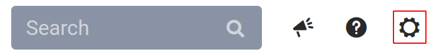
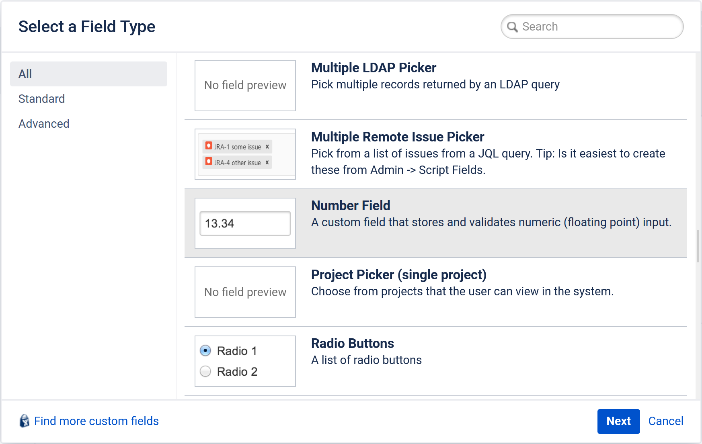
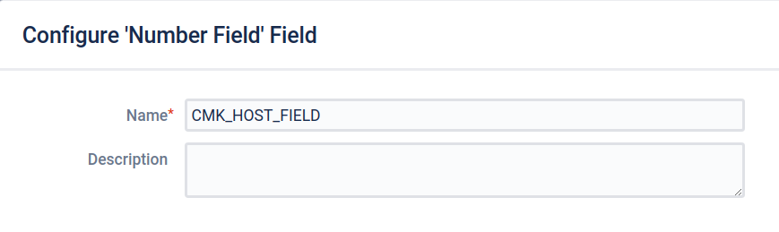
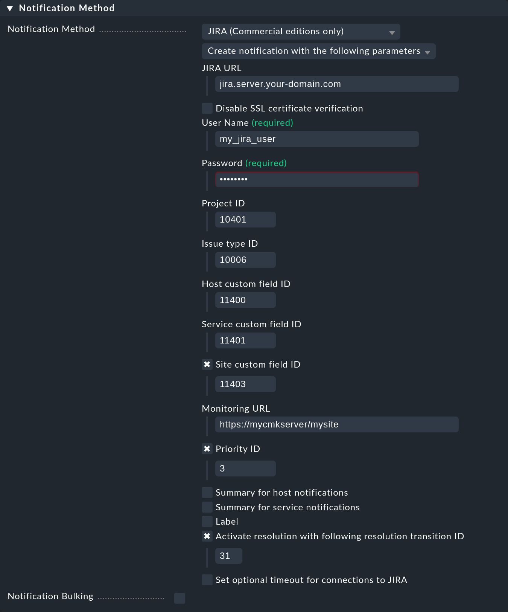

Wenn Sie die Software Jira zum Projektmanagement, zur Software-Entwicklung oder zur Fehlerverfolgung verwenden, können Sie mit den kommerziellen Editionen Benachrichtigungen aus Checkmk heraus an Jira senden und dort Issues erzeugen.
Dies funktioniert für die Jira Applikationen Jira Core, Jira Software und Jira Service Desk.
Wenn Sie die Software Jira zum Projektmanagement, zur Software-Entwicklung oder zur Fehlerverfolgung verwenden, können Sie mit den kommerziellen Editionen Benachrichtigungen aus Checkmk heraus an Jira senden und dort Issues erzeugen.
Dies funktioniert für die Jira Applikationen Jira Core, Jira Software und Jira Service Desk.
Unterstützt werden dabei folgende Optionen:
Issues für Host- und Service-Probleme erzeugen.
Issues mit definierter Priorität (priority) erstellen.
Issues mit einem definierten Label erstellen.
Links auf Host/Services in Checkmk aus den erzeugten Jira-Issues setzen.
Eine Resolution im Issue bei eintretenden OK-Zuständen setzen.
Um die Anbindung von Checkmk an Jira einzurichten, legen Sie in Jira zunächst einige neue Felder (Fields) an und ermitteln bestimmte Jira-IDs. Anschließend konfigurieren Sie die Benachrichtigungsmethode für Jira in Checkmk.
1. Jira konfigurieren
Checkmk muss bei der Interaktion mit Jira wissen, welche Benachrichtigungen bereits einen Issue erzeugt haben und welche nicht. Damit das möglich wird, müssen Sie in Jira zwei sogenannte Custom fields, also benutzerdefinierte Felder, erstellen — eines für Benachrichtigungen über Host-Probleme, und eines über Service-Probleme.
Um die Host- und Service-Probleme zuordnen zu können, müssen deren IDs eindeutig sein. Dies ist der Fall, wenn Ihre Jira-Instanz von genau einer Checkmk-Instanz Benachrichtigungen erhält, da der Monitoring-Kern einer Checkmk-Instanz für die Eindeutigkeit sorgt. Nun kann es aber sein, dass im verteilten Monitoring mehrere Checkmk-Instanzen Benachrichtigungen senden, falls dezentrale Benachrichtigungen konfiguriert sind. Erhält Ihre Jira-Instanz also von mehreren Checkmk-Instanzen Benachrichtigungen, ist es höchstwahrscheinlich mit der Eindeutigkeit vorbei — spätestens dann, wenn die ID eines Host-Problems bereits von einer anderen Checkmk-Instanz verwendet wurde. In einer solchen Konfiguration benötigen Sie ein weiteres benutzerdefiniertes Feld für die Checkmk-Instanz, mit dem die eindeutige Zuordnung wieder möglich wird.
Für die Konfiguration in Checkmk benötigen Sie die Jira-IDs der erstellten benutzerdefinierten Felder — und zusätzlich die von einigen anderen Feldern, im Ganzen also die folgende Liste:
Project ID
Issue type ID
Priority ID (optional)
Host custom field ID
Service custom field ID
Site custom field ID (optional)
(Workflow) Transition ID (optional)
Die allermeisten dieser IDs können mit dem unten angegebenem Skript über eine der REST APIs von Jira ausgelesen werden. Jira-Administratoren können die IDs - auch solche, die über die API und somit das Skript nicht abrufbar sind - über die GUI von Jira ermitteln.
1.1. Einrichten der benutzerdefinierten Felder in Jira
Feld für Host-Probleme erstellen
-
Öffnen Sie als Jira-Administrator den Punkt Administration in der Kopfleiste:
 Wählen Sie nun Issues und navigieren Sie im Abschnitt Fields zu Custom Fields. Über Add custom field - dieser Knopf kann sich je nach Jira Produkt im oberen Drittel des rechten Bildrandes verstecken - können Sie ein neues, benutzerdefiniertes Feld anlegen.
-
Wählen Sie im nächsten Fenster All, damit alle Feldarten angezeigt werden.
 -
Klicken Sie den Feldtyp Number Field und anschließend Next:
 Als Name tragen Sie zum Beispiel
CMK_HOST_FIELDein. Die Description können Sie optional mit einer Beschreibung des neuen Felds befüllen. Bestätigen Sie das ganze durch einen Klick auf Create.
Feld für Service-Probleme erstellen
Da Sie auch für Benachrichtigungen über Service-Probleme ein solches Feld benötigen, wiederholen Sie die Prozedur von oben, dieses Mal aber mit einem entsprechenden Eintrag für Services, z.B. mit dem Feldnamen CMK_SVC_FIELD.
Feld für die Checkmk-Instanz erstellen
Auch für das optionale Feld für die Instanz können Sie im Prinzip der Anleitung von oben folgen.
Wählen Sie aber diesmal als Feldtyp Text Field (single line) und als Feldname z.B. CMK_SITE_FIELD.
1.2. Jira-IDs über externes Skript ermitteln
Sie können die IDs gesammelt mit folgendem Skript abfragen, das die Jira REST-API nutzt.
Ersetzen Sie dabei JIRA_USERNAME, JIRA_PASSWORD, PROJECT_KEY und https://jira.server.your-domain.de mit den bei Ihnen gültigen Werten.
Den PROJECT_KEY können Sie auch ohne administrative Rechte aus der Jira-GUI ermitteln.
#!/usr/bin/env python3
import requests
import sys
import urllib3
urllib3.disable_warnings(urllib3.exceptions.InsecureRequestWarning)
user = "JIRA_USERNAME"
password = "JIRA_PASSWORD"
project_key = "PROJECT_KEY"
jira_instance = "https://jira.server.your-domain.de"
custom_field_1 = "CMK_HOST_FIELD"
custom_field_2 = "CMK_SVC_FIELD"
custom_field_3 = "CMK_SITE_FIELD" # don't edit if field is not used
def handle_response(user, password, jira_instance, what):
url = "%s/rest/api/2/%s" % (jira_instance, what)
sess = requests.Session()
sess.auth = (user, password)
response = sess.get(url, verify=False)
return response
sys.stdout.write("=== IDs for project %s ===\n" % project_key)
infotext = ""
for section, id_name in [ ("Project_ID", "project"),
("Issue", "issuetype"),
("Priority", "priority"),
("Field", "field"),
]:
json_response = handle_response(user,password,jira_instance,id_name).json()
if id_name == "project":
infotext = ""
for project in json_response:
if project["key"] == project_key:
infotext += "%s\n\n" % project.get("id", "Project ID not found")
if not infotext:
infotext += "Project ID not found, project name existing?\n\n"
else:
types = ""
for line in json_response:
if id_name == "field":
if line["name"].lower() == custom_field_1.lower() or \
line["name"].lower() == custom_field_2.lower() or \
line["name"].lower() == custom_field_3.lower():
types += "%s: %s\n" % (line["name"], line["id"].split("_")[1])
else:
types += "%s: %s\n" % (line["name"], line["id"])
infotext += "=== %s types\n%s\n" % (section, types)
sys.stdout.write(infotext)Die Ausgabe des Skripts sieht dann ungefähr so aus:
=== IDs for project MY_PROJECT ===
10401
=== Issue types
Test case: 10600
Epic: 10000
Task: 10003
Sub-task: 10004
Bug: 10006
Story: 10001
Feedback: 10200
New Feature: 10005
Support: 10500
Improvement: 10002
=== Priority types
Blocker: 1
High: 2
Medium: 3
Low: 4
Lowest: 5
Informational: 10000
Critical impact: 10101
Significant impact: 10102
Limited impact: 10103
Minimal impact: 10104
=== Field types
CMK_HOST_FIELD: 11400
CMK_SVC_FIELD: 11401
CMK_SITE_FIELD: 114031.3. Jira-IDs über die GUI ermitteln
Als Alternative zur Skriptausführung können Sie die IDs auch über die Jira-GUI auslesen, wofür Sie sich aber mit einem administrativen Konto in Jira anmelden müssen. Atlassian, der Hersteller von Jira, hat das Vorgehen am Beispiel der Project ID in einer eigenen Anleitung beschrieben.
Die IDs der weiteren Felder und Issues types lassen sich ablesen, in dem Sie das jeweilige Element in der Administrator-GUI von Jira editieren. Die ID steht dann im Regelfall als letzter Wert in der Adressleiste Ihres Browsers.
2. Checkmk konfigurieren
Wie Sie Benachrichtigungen im Allgemeinen in Checkmk einrichten, haben Sie bereits im Artikel über Benachrichtigungen erfahren.
Um nun die Jira-Benachrichtigungen zu nutzen, gehen Sie in Checkmk wie folgt vor:
Erstellen Sie eine neue Benachrichtigungsregel mit Setup > Events > Notifications > Add rule.
-
Wählen Sie als Notification Method den Eintrag JIRA (Commercial editions only):
 Im Feld JIRA URL tragen Sie die URL Ihrer Jira-Instanz ein, also z.B.
jira.server.your-domain.com.Bei User Name und Password hinterlegen Sie die Zugangsdaten des Jira-Kontos für den Zugriff.
Für Project ID und Issue type ID benötigen Sie die vorher ermittelten IDs in Jira, im Beispiel
10401für die Project ID und10006für den Issue-TypBug.Bei Host custom field ID, Service custom field ID und (optional) Site custom field ID tragen Sie IDs der von Ihnen in Jira angelegten, benutzerdefinierten Felder ein.
Um in den erzeugten Issues direkt nach Checkmk verlinken zu können, tragen Sie unter Monitoring URL die URL Ihrer Checkmk-Instanz ein, also z.B.:
https://mycmkserver/mysite
Weiterhin haben Sie noch die folgenden optionalen Einstellungsmöglichkeiten:
Mit der Priority ID können Sie definieren, mit welcher Priorität die Issues in Jira angelegt werden. Hier können Sie eine der im Skript ausgelesenen
Priority typeseintragen, von1bis5.Die Beschreibungen, die in den Issues für Host- und Service-Probleme erzeugt werden, können Sie über die Optionen Summary for host notifications und Summary for service notifications ändern.
Über den Punkt Label können Sie definieren, ob Sie bei der Issue-Erzeugung in Jira Label mit übergeben möchten. Wenn Sie Label aktivieren, ohne einen Wert einzutragen, wird
monitoringgesetzt.
Checkmk schreibt den Wert des Labels in das Jira-Feldlabels, was nur gelingt, wenn dieses Feld in Ihrer Jira-Applikation existiert, was z.B. bei Jira Software der Fall ist, nicht aber bei Jira Service Desk.Wenn Sie bei Benachrichtigungen über eine Zustandsänderung auf OK in Checkmk auch eine Resolution in den Issue in Jira eintragen lassen wollen, können Sie diese unter Activate resolution with following resolution transition ID definieren.
Um hier die richtige ID ermitteln zu können, benötigen Sie ebenfalls Administrator-Rechte in Jira. Navigieren Sie wieder in den Bereich Issues und klicken Sie hier auf Workflows. Klicken Sie anschließend in der Zeile des Standard-Workflows des verwendeten Jira-Projekts auf View. Sollten Sie nun einen Flowchart sehen, stellen Sie die Anzeige durch einen Klick auf Text um. Nun können Sie die gewünschte ID in der Spalte Transitions (id) ablesen.Mit Set optional timeout for connections to JIRA können Sie den Timeout für Verbindungen zu Jira konfigurieren. Wenn Sie hier nichts eintragen, gilt der Standardwert von 10 Sekunden.
Bei der Kontaktauswahl im folgenden Kasten Contact selection beachten Sie die folgenden beiden Punkte:
Sorgen Sie bei der Kontaktauswahl dafür, dass die Benachrichtigungen nur an einen Kontakt versendet werden, z. B. durch Auswahl eines einzelnen Benutzers. Bei den Benachrichtigungsmethoden zu Ticketsystemen & Co. dient die Kontaktauswahl nur dazu, festzulegen, dass benachrichtigt wird. Die Benachrichtigungen werden aber nicht an den ausgewählten Benutzer, sondern an das Ticketsystem gesendet. Beachten Sie, dass eine Kontaktauswahl über Kontaktgruppen, alle Kontakte eines Objekts oder ähnliches in den meisten Fällen mehrere identische Benachrichtigungen für ein Ereignis generiert, die dann doppelt, dreifach oder noch öfter im Ticketsystem landen.
Wenn der erste Punkt erfüllt ist, der Benutzer aber in mehreren Benachrichtigungsregeln für dieselbe Methode verwendet wird, dann greift jeweils nur die letzte Regel. Es empfiehlt sich daher, für jede dieser Benachrichtigungsregeln einen eigenen funktionalen Benutzer anzulegen.
Wie Sie die neue Benachrichtigungsmethode testen können, erfahren Sie im Artikel zu den Benachrichtigungen.
3. Diagnosemöglichkeiten
Sollten nach der Einrichtung der Benachrichtigungsregel in Checkmk keine Tickets in Jira ankommen, prüfen Sie die zugehörige Log-Datei ~/var/log/notify.log.
Von Jira kommen hier im Regelfall recht brauchbare Fehlermeldungen zurück, die Ihnen bei der Diagnose tatsächlich helfen können.
Im folgenden listen wir einige Beispiele auf.
Fehlermeldung: Unable to create issue, JIRA response code 400, Field 'labels' cannot be set.
Eventuell verfügt Ihr verwendetes Jira-Produkt nicht über Labels. Schalten Sie in Checkmk die Verwendung von Labels in Ihrer Benachrichtigungsregel einfach ab, indem Sie den Haken vor Label wieder entfernen.
Fehlermeldung: Unable to create issue, JIRA response code 400, b’project is required'.
Diese Fehlermeldung weist darauf hin, dass die ID nicht korrekt ist, welche Sie in der Benachrichtigungsregel für das betreffende Feld (hier: Project ID) eingetragen haben.
Fehlermeldung: Unable to resolve https://jira.server.your-domain.de/browse/ISSUE-123, JIRA response code 500, b’Internal server error'
Erhalten Sie diese Fehlermeldung, wenn ein Ticket in Jira von Checkmk automatisch geschlossen bzw. in einen anderen Status versetzt werden soll, dann kann dies ein Hinweis darauf sein, das die von Ihnen eingetragene Transition ID nicht korrekt ist. Die Transition ID steht in der Benachrichtigungsregel im Feld Activate resolution with following resolution transition ID. Gleichen Sie diese ID in der Regel erneut mit der Weboberfläche von Jira ab.